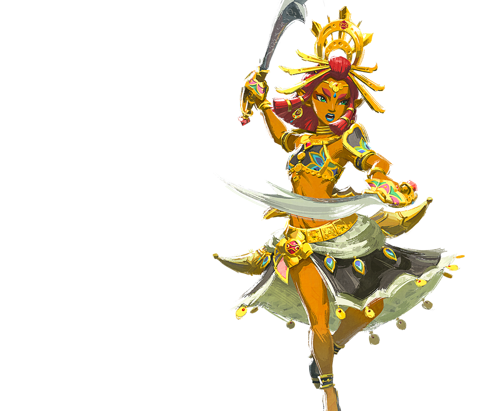
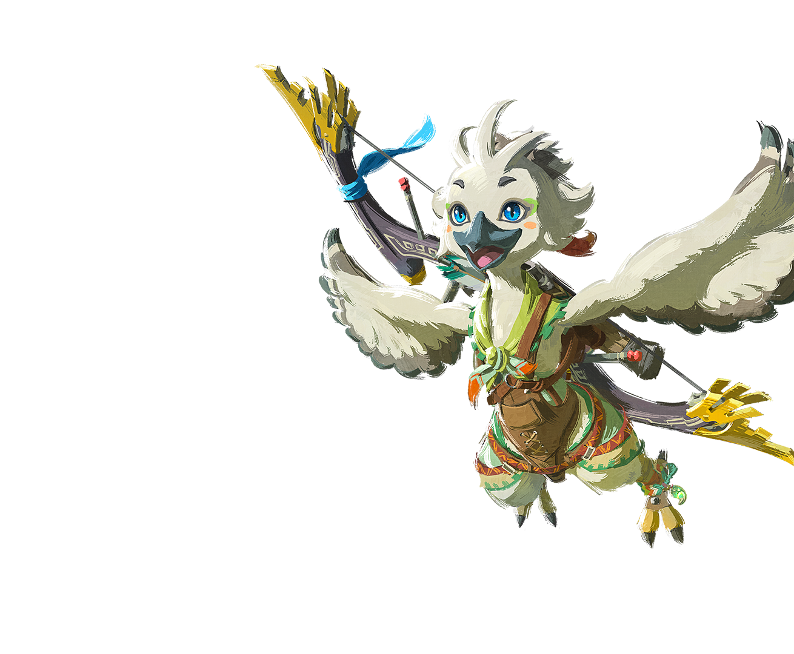
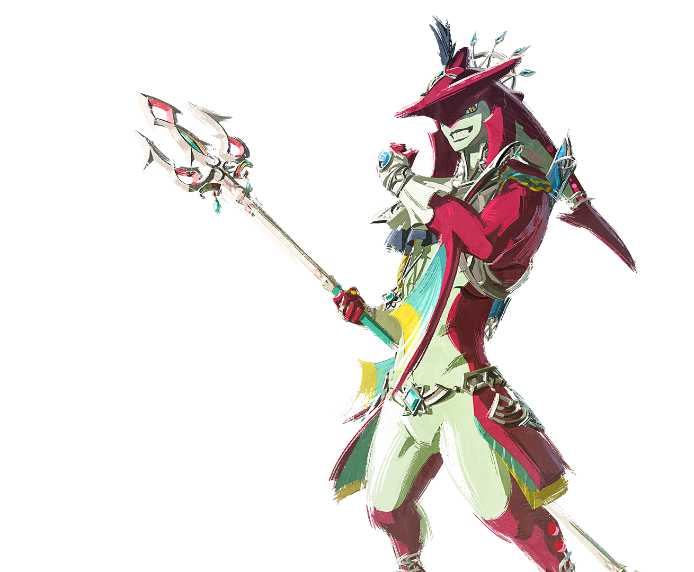
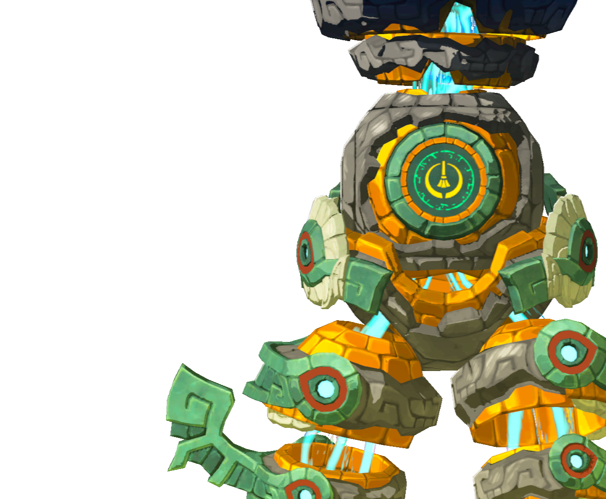

全 20 个天空遗志坐标 · 互动地图 · Boss 击败条件 · 收集进度追踪
贤者的遗志收集进度




| # | 遗志位置 | 坐标 (X, Y, Z) | 地区 | 需击败 Boss | 备注 | ✓ |
|---|---|---|---|---|---|---|
🔥 阿沅 — 火之贤者
鼓隆族 · Fire Sage · 5 个遗志
| ||||||
| 001 | 南奥尔汀天空群岛South Eldin Sky Archipelago | 1879, 1202, 1251 | 艾尔丁天空 | 方块魔像II | 击败方块魔像II，宝箱从其身上掉落 | |
| 002 | 奥尔汀天空群岛Eldin Sky Archipelago | 1800, 1642, 1437 | 艾尔丁天空 | 宝箱（解谜） | 奥尔汀天空群岛，使用矿车穿越轨道后开箱 | |
| 003 | 索卡拉天空群岛Sokkala Sky Archipelago | 3671, 1484, 1158 | 阿卡拉天空 | 宝箱（解谜） | 球形岛内操控入口朝下，用通天术进入后开箱 | |
| 004 | 拉聂尔天空群岛Lanayru Sky Archipelago | 2999, -251, 894 | 拉纳尤天空 | 方块魔像II | 击败方块魔像II，宝箱从其身上掉落 | |
| 005 | 拉聂尔大水源天空Lanayru Great Spring Sky | 2911, 525, 929 | 拉纳尤天空 | 宝箱（解谜） | 球形旋转天空岛，停止旋转后进入下层开箱 | |
⚡ 露珠 — 雷之贤者
格鲁德族 · Thunder Sage · 5 个遗志
| ||||||
| 006 | 西格鲁德天空West Gerudo Sky | -4447, -2731, 1419 | 格鲁德天空 | 王者古栗欧克 | 击败王者古栗欧克后，南侧祭坛宝箱解锁 | |
| 007 | 东格鲁德天空群岛East Gerudo Sky Archipelago | -1958, -1812, 1140 | 格鲁德天空 | 宝箱（解谜） | 用镜子反射阳光点亮六边形面板，开启锁门宝箱 | |
| 008 | 星望岛（北格鲁德天空）Starview Island | -3457, -264, 1938 | 格鲁德天空 | 宝箱（解谜） | 星望岛内用镜子反射光线点亮面板，开启宝箱 | |
| 009 | 西海拉鲁天空群岛West Hyrule Sky Archipelago | -2290, -411, 894 | 中央天空 | 方块魔像III | 击败方块魔像III，宝箱从其身上掉落 | |
| 010 | 法罗尼天空群岛Faron Sky Archipelago | -324, -2591, 894 | 法罗尼天空 | 方块魔像III | 击败方块魔像III，宝箱从其身上掉落 | |
🌬 丘栗 — 风之贤者
利特族 · Wind Sage · 5 个遗志
| ||||||
| 011 | 西海布拉天空群岛West Hebra Sky Archipelago | -4470, 2171, 1253 | 赫布拉天空 | 王者古栗欧克 | 击败王者古栗欧克后，南侧祭坛宝箱解锁 | |
| 012 | 南海布拉天空群岛South Hebra Sky Archipelago | -3075, 2151, 648 | 赫布拉天空 | 宝箱（开放） | 南海布拉天空群岛废墟中央，直接开箱 | |
| 013 | 北塔班达天空群岛North Tabantha Sky Archipelago | -3780, 1572, 1237 | 塔班达天空 | 宝箱（开放） | 北塔班达天空群岛西侧岛屿，直接开箱 | |
| 014 | 雷鸣岛（法罗尼天空）Thunderhead Isles | 967, -3306, 846 | 法罗尼天空 | 宝箱（解谜） | 雷鸣岛，用弹射器发射后破石取箱 | |
| 015 | 龙首岛（法罗尼天空）Dragonhead Island | 1309, -3210, 459 | 法罗尼天空 | 宝箱（开放） | 龙首岛西北角祭坛，直接开箱 | |
💧 希多 — 水之贤者
卓拉族 · Water Sage · 5 个遗志
| ||||||
| 016 | 南海拉鲁天空群岛South Hyrule Sky Archipelago | -950, -1736, 1008 | 中央天空 | 宝箱（解谜） | 双水池岛，用究极手抬起闸门排水后开箱 | |
| 017 | 北奈克鲁达天空群岛North Necluda Sky Archipelago | 1934, -1063, 961 | 奈克鲁达天空 | 宝箱（开放） | 北奈克鲁达天空群岛发光石岛屿，直接开箱 | |
| 018 | 东南奈克鲁达天空Southeast Necluda Sky | 4652, -3828, 1065 | 奈克鲁达天空 | 王者古栗欧克 | 击败王者古栗欧克后，南侧祭坛宝箱解锁 | |
| 019 | 南奈克鲁达天空群岛South Necluda Sky Archipelago | 2559, -3601, 894 | 奈克鲁达天空 | 方块魔像III | 击败方块魔像III，宝箱从其身上掉落 | |
| 020 | 涌泉岛（拉聂尔天空）Wellspring Island | 3480, 667, 1325 | 拉纳尤天空 | 方块魔像II | 涌泉岛，击败方块魔像II后开箱 | |